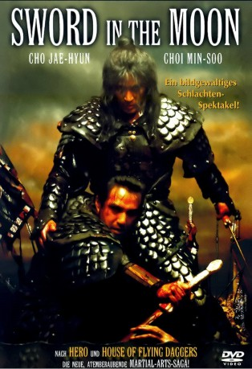

#10256 Sword in the Moon
 
 IMDB-Wertung: 5.9 / 10
IMDB-Wertung: 5.9 / 10  Metascore: 0
Metascore: 0 
Ji-hwan und Gyu-yeob sind Freunde und genießen im Korea des 16. Jahrhunderts die Ausbildung in der Spezialtruppe "Sword in the Moon", eine Art Leibwache des Herrschers.Als ein Putsch die Machtverhältnisse kippt, schließt sich Gyu-yeob dem neuen Herrscher widerwillig an, um seine Einheit vor der Hinrichtung zu bewahren. Der loyale Ji-hwan dagegen fällt bei der Verteidigung und wird für tot gehalten... (Quelle: www.ofdb.de)
Jahr: 2003
Dauer: 98 Minuten
FSK: 16
Land: Süd-Korea Studio: Splendid FilmTonspuren:
Untertitel:
Auflösung: 1080p (1920x816) Größe: 5109 MB
Genre: Action, Drama, Abenteuer
Regisseur: Ui-Seok Kim
Drehbuch: Ma Dae-yun, Min-seok Jang, Hae-gon Kim, Gye-ok Park
Soundtrack: Kyeong-seob Lee
Darsteller:
- Min-su Choi als Choi, Ji-hwan
- Jae-Hyun Cho als Yun, Gyu-yeob
- Bo-kyeong Kim als Shi-yeong
- Jong-su Lee als Jae-deok
- Yeon-soo Yoo als
- Ju-bong Gi als
- Seong-hwan Jeon als
- Sang-geon Jo als
- Se-dong Kim als
- Hae-hyo Kwon als
- Mu-hyeon Lee als
- Tae-hee Won als
Datei: X:\HD-Eastern-Classic(N-Z)\Sword in the Moon (2003, FSK16, 1920x816).mkv seit 27.12.2018
Festplatte: HD Eastern+Western
 Es gibt insgesamt 61 Filme in der Gruppe 'HD-Eastern-Classic(N-Z)'
Es gibt insgesamt 61 Filme in der Gruppe 'HD-Eastern-Classic(N-Z)'